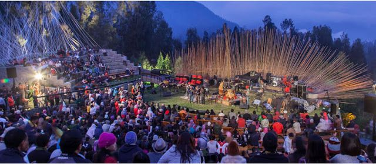

Ikuti perjalanan budaya yang penuh warna, rasa, dan harmoni!
Bersiaplah untuk tiga hari pengalaman tak terlupakan
— penuh dengan pertunjukan seni, kuliner lezat, dan warisan
budaya dari seluruh Nusantara.
